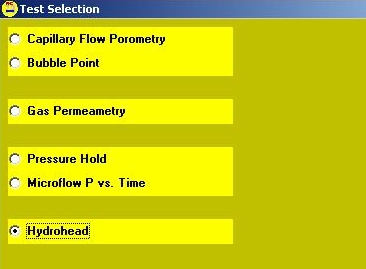
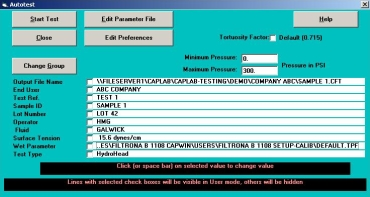
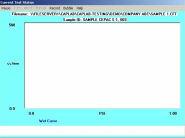

Select the Group menu option.
Select the Group menu option.Choose Select Group to use an existing group.
Choose New Group to create a new group.
For more information on the use of groups see Example: Using Groups.
 From the CAP WIN Main Screen, select the Auto Test
option from the Execute
menu.
From the CAP WIN Main Screen, select the Auto Test
option from the Execute
menu.
An Auto Test screen specific to the type of test appears.
Select Type of Test. If the test shown is incorrect, click on Type of Test. If the test shown is incorrect, click on Type of Test.

Select Type of Test. If the test shown is incorrect, click on Type of Test. If the test shown is incorrect, click on Type of Test.
The Test Selection
screen appears.
Select Hydrohead from the yellow list. Check the Show results at end of test box if desired. This option will allow the Hydrohead pressure and pore size to be displayed at the end of the test.
Click OK. The Auto Test screen appears.
Select Hydrohead from the yellow list. Check the Show results at end of test box if desired. This option will allow the Hydrohead pressure and pore size to be displayed at the end of the test.
Click OK. The Auto Test screen appears.

Select Output File Name.
If the file shown is incorrect or to create a new file, click on Output File Name.

 The Output Data File selector appears.
The Output Data File selector appears.To select an existing file, click on the folder containing the file. Click on the file in the file list. To create a new file, select or create a folder. Type a name for the file in the text. Click OK. You are returned to the Auto Test screen.
End User, Test Reference, Sample ID, Lot_Number, Operator
and Fluid are all optional and may be left blank. These items are printed on the reports for information and identification purposes. (It is recommended that Fluid not be left blank; in the Hydrohead test you will usually be using water as the fluid.)
Surface Tension is used by the CAP WIN
program to perform calculations. Be sure the surface tension displayed is correct for the fluid you are using. Enter the correct value in dynes/cm if it is not. This value is not automatically updated if you change Fluid. See Pore Size Range Table , for more information.

 A message box prompts you to "Load the sample with fluid on top, seal the chamber and attach the air pressure tube," if this option is selected to be shown.
A message box prompts you to "Load the sample with fluid on top, seal the chamber and attach the air pressure tube," if this option is selected to be shown.Insert the sample as described below then click OK to begin the test. (For complete information on installing samples, see the section on Installing the Sample.)
Place the sample in the bottom of the sample chamber. Make sure it completely seals the O ring. If it does not, place the screened adapter plate on t he bottom of the chamber aligning it with the three chamber pins. Place the sample on top of the adapter plate, making sure that the O-ring of the bottom plate seals against it. Finally, place the top adapter plate on top of the sample.
Place the spacing insert in the chamber. It should press far enough into the chamber so that the O ring on its side will pass below the upper rim of the chamber, but not so far that the entire insert is below the rim. Squirt a uniform layer of liquid onto the surface of the sample.
Screw the chamber cap and hand-tighten to the point where the O ring on the top of the spacing insert is compressed against the chamber cap. Make sure that the insert is no lower than the height of the sample chamber. Attach the air hose with the quick-connect fitting to the sample chamber lid.
Caution: Over-tightening the cap can cause the cap and spacing insert to seize. If this happens, the sample chamber must be replaced. Over-tightening may also damage the sample.
After installing the sample and clicking OK, the Current Test Status screen appears. A box appears in the center of the screen prompting you to click OK to start the test.

When the Hydrohead pressure is found, a message box informs you that the test is complete and that the sample may be removed.
Clicking the OK button returns you to the CAP WIN Main Screen.

Clicking the OK button returns you to the CAP WIN Main Screen.